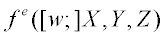

Assigns to medium a GENERAL polynomial or USERFUNC function in the global coordinates X, Y, Z.
Syntax
MEDIA [ m ]
n [ n' n" . . . ] SCATTER m k e t [ l ] ] [ 'name' ]
:
| Option | Description |
|---|---|
| i | starting media number |
| SCATTER | allows specification of the maximum number of scattering events per ray for all volumentric models, including homogeneous models expressed by the short form. The maximum number of scattering events per ray defaults to 1000 if l is not specified. |
| m | refers to a VOLUME scattering MODEL |
| k | its magnitude is the SURFACE designation for this function |
| e | exponent of the scattering function |
| t | step length used for tracing a ray when tracing a ray in this inhomogeneous medium |
| l | maximum number of ray steps in medium |
| name | descriptive name that can be assigned to this medium (only the first 24 characters after the comment delimiter are stored). |
Remarks
